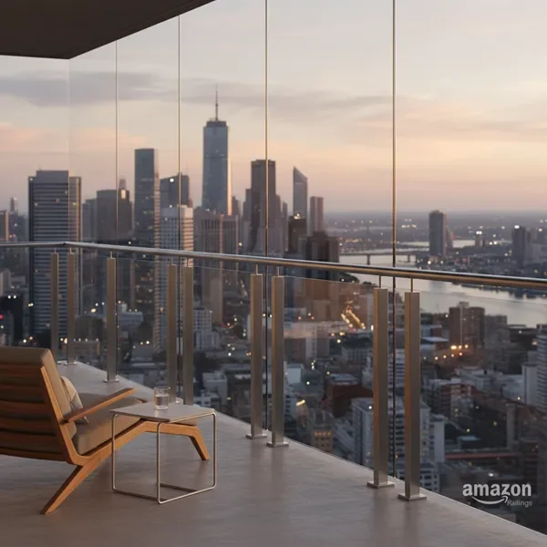
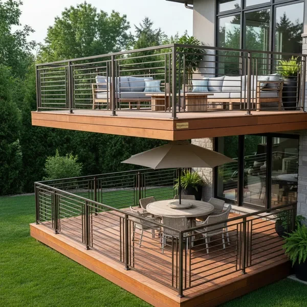

Our Premium Railing Solutions

Aluminum Railings
Durable, low-maintenance aluminum railing systems perfect for any outdoor space. Our custom aluminum railings combine strength with elegant design, offering superior weather resistance and lasting beauty for your deck, porch, or balcony.

Glass Railings
Sophisticated glass railing systems that maximize views while ensuring safety. Our frameless and semi-frameless glass railings create an open, modern aesthetic perfect for luxury homes and commercial properties seeking unobstructed sightlines.

Deck Railings
Custom deck railing solutions designed for safety, style, and longevity. We specialize in creating deck railings that complement your outdoor living space, using premium materials and expert installation techniques to ensure years of reliable performance.